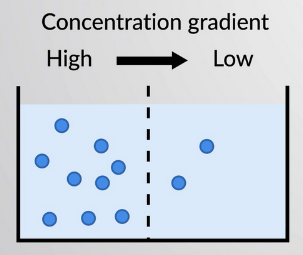
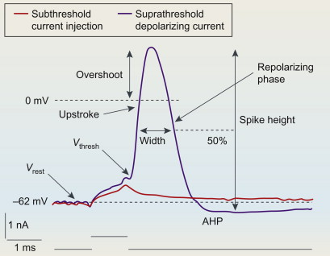
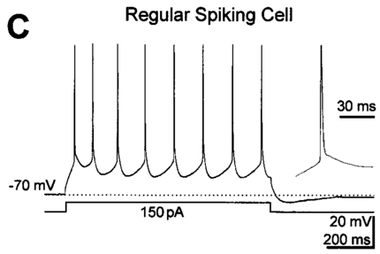
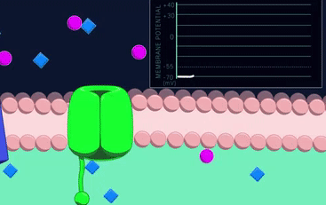

Neuroscience of social-cognitive enhancement for well-being and Neural bases of decision processes
Module 1 - Neuron Biophysics
Raffaele M Mazziotti, PhD
University of Florence
Ion Movement
Neurons communicate using electrical signals.
These signals exist because ions move across cell membranes.
Understanding ion movement is the foundation for:
Electrical signaling
Membrane potential
Action potentials
Synaptic transmission
What Is an Ion?
An ion is an atom or molecule with an electrical charge.
Positive charge → cation
Negative charge → anion
In neuroscience, the most important ions are:
Sodium (Na⁺)
Potassium (K⁺)
Chloride (Cl⁻)
Calcium (Ca²⁺)
Why Charges Matter in the Brain
Electrical signals arise because:
Ions carry charge
Neurons separate charges across membranes
Differences in charge create electrical forces
No electricity → no neural signaling.
The Neuronal Membrane
The neuron is surrounded by a lipid bilayer membrane.
Key properties:
Electrically insulating
Impermeable to most ions
This separation is essential for signaling.
Ion Channels
Ion channels are proteins embedded in the membrane.
They:
Allow specific ions to cross
Are selective (not all ions can pass)
Can open or close
Ion movement only occurs through these channels.
Channel Selectivity
Ion channels are selective because:
Ions differ in size
Ions differ in charge
Channel pores are highly specific
Example:
Sodium channels allow Na⁺ but not K⁺
Potassium channels allow K⁺ but not Na⁺
Two Forces Acting on Ions
Ion movement depends on two forces:
Diffusion
Electrical attraction or repulsion
The combined effect determines ion flow.
Diffusion
Diffusion is movement from:
flowchart LR
A[High concentration]
B[Low concentration]
A -->|Net flow| B
B -. No net flow .-> A
style A fill:#2b2b2b,stroke:#67bdfb,color:#e6e6e6
style B fill:#2b2b2b,stroke:#67bdfb,color:#e6e6e6
linkStyle default stroke:#bbbbbb,stroke-width:2px
If more Na⁺ ions are outside the neuron than inside, Na⁺ tends to move inward.
It does not require energy.

Electrical Forces
Charged particles are influenced by:
Opposite charges attract
Same charges repel
A negatively charged interior attracts positive ions.
Electrochemical Gradient
The electrochemical gradient combines:
Chemical gradient (diffusion)
Electrical gradient (charge)
Ion movement depends on both at the same time.
This is the key principle of neural signaling.
Example: Sodium Ions (Na⁺)
Typically:
High Na⁺ outside the neuron
Low Na⁺ inside
Inside of neuron is negatively charged
Both diffusion and electrical forces push Na⁺ inward.
The inside of the neuron (and cells in general) is negative mainly because of large amount of anions inside the cell like proteins and other large organic anions (phosphates, metabolites).
Example: Potassium Ions (K⁺)
High K⁺ inside the neuron
Low K⁺ outside
Electrical force pulls K⁺ inward
Diffusion pushes K⁺ outward
Here the diffusion force in higher that the electical force an K⁺ flux tends to go outward
Example: Calcium Ions (Ca²⁺)
Very low concentration inside neurons
Strong positive electrical charge
Acts as both an ion and a signaling molecule
Opening Ca²⁺ channels causes a inward flux of Ca²⁺ ions.
Ion Movement Is Passive
Ion movement through channels:
Does not require energy
Is driven by electrochemical gradients
But maintaining the gradients require energy! The gradients are maintained by specific proteins called pumps that can move ions against their gradients.
Membrane Voltage
The neuron’s membrane separates electrical charges.
This separation creates a quantity called membrane voltage.
Voltage is a difference in electrical potential
It tells us how strong the electrical force is
It is measured across the membrane, not inside the cell
Voltage is not a substance and not a force.
It is a measure of how much electrical energy is available to move ions.
Which Ion Dominates?
The influence of an ion depends on:
Permeability, a measure of how easily a given ion can cross the membrane through its channels and is given by the number of ions for that channel are open.
At rest, neuronal membranes are:
Highly permeable to \(K^+\)
Weakly permeable to \(Na^+\)
Moderately permeable to \(Cl^-\)
In most neurons resting membrane potential is \(\approx -65\,\mathrm{mV}\). This reflects potassium dominance at rest.
Voltage Change
If channels open for an ion, the membrane potential changes. If a positive ion moves inside the cell, the membrane potential becomes less negative; if it moves outside, it becomes more negative. For negative ions, the effect is reversed.
Example: Opening Sodium Channels
If \(Na^+\) channels open:
\(Na^+\) enters the cell
Membrane potential becomes less negative
This process is called depolarization.
Example: Opening Potassium Channels
If \(K^+\) channels open:
\(K^+\) leaves the cell
Membrane potential becomes more negative
This process is called hyperpolarization.
From Steady Voltage to Signals
Neurons use changes in membrane potential as signals.
These changes can be:
Small or large (millivolts )
Slow or fast (milliseconds)
Local or long-range (micrometers to meters)
Two main types exist:
Graded potentials
Action potentials
They differ in origin, size, and function.
Graded Potentials
Graded potential: local change in membrane potential whose magnitude depends on the strength of the stimulus.
This voltage is called the threshold. Potentials beyond the threshold trigger Action Potentials.
Action potential: A large, rapid, and stereotyped change in membrane potential, originated at the level of the axon hillock, that propagates along the axon.

Why Action Potentials Are Needed
Graded potentials decay with distance.
To communicate over long axons, neurons need:
A signal that does not fade
A reliable, all-or-none event

Membrane Proteins and Transport
The lipid bilayer is electrically insulating. Ions can cross the membrane only through membrane proteins.
Membrane transport proteins fall into two broad categories:
Channels
Transporters (carriers and pumps)
Ion channel: A protein that forms a continuous aqueous pathway across the membrane, allowing ions to move down their electrochemical gradient.
Properties:
Do not use metabolic energy (passive)
Do not move ions against gradients (no energy)
Selective to specific Ions
Channel Gating
Ion channels are not static holes.
They fluctuate between:
Closed states
Open states
Channels can be gated by different physical signals:
Chemical binding (ligand-gated - e.g. Neurotransmitters)
Mechanical deformation (mechanosensitive)
Membrane voltage (voltage-gated - activated when the membrane cross a specific voltage)
Gating: The process by which an ion channel switches between open and closed states.

Graded Potentials and Channels
During Graded Potentials:
Passive channels remain unchanged
Voltage-gated channels remain mostly closed
Voltage changes are passive and proportional to input and decay over space-time.
This marks the transition from passive to active behavior.
Once threshold is crossed:
Many \(Na^+\) channels open rapidly
Membrane permeability to \(Na^+\) increases sharply
Voltage changes are no longer passive
The action potential is initiated.
During the Action Potential
During the spike:
Voltage-gated \(Na^+\) channels open, then inactivate
Voltage-gated \(K^+\) channels open with delay
Voltage is dominated by voltage-gated dynamics.
After the action potential:
\(Na^+\) channels recover from inactivation
\(K^+\) channels close
Passive channels dominate again
Inactivation: A state in which a voltage-gated channel is closed and temporarily unable to reopen, even though the membrane is still depolarized.
Refractory Period
After an action potential, the neuron cannot immediately fire another spike.
Refractory period: A time interval following an action potential during which the neuron’s ability to generate another action potential is reduced or absent.
This phase is caused purely by Na⁺ channel inactivation.
Refractory periods ensure that:
Action potentials propagate in one direction
Spikes are separated in time (neural code)
Maximum firing frequency is limited
Axon Diameter and Conduction Speed
The speed of action potential propagation depends on axon geometry.
Larger axons:
Have lower internal (axial) resistance
Allow local currents to spread more easily
Depolarize adjacent membrane faster
As a result, action potentials propagate faster in thicker axons.
Myelination
Many axons, especially long ones, are wrapped in myelin, a multilayered insulating sheath formed by glial cells. This ensures that the signal reaches its destination.
Myelination is not continuous along the axon. Axons contain regularly spaced gaps called nodes of Ranvier.
At nodes:
Voltage-gated \(Na^+\) and \(K^+\) channels are highly concentrated
Action potentials are regenerated
Saltatory conduction (the action potential jumps from one node to the other)